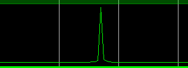
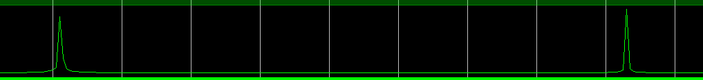
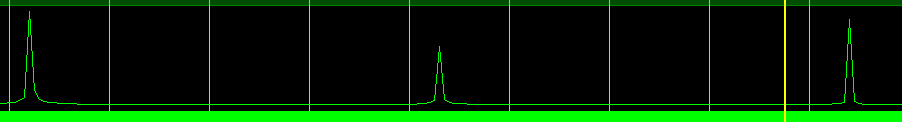
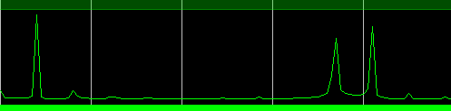

MimariArchitecture
config: FWD = 1
| Test tezgâhı süreciTestbench process | İşlevFunction |
|---|---|
clk_gen | 100 MHz saat100 MHz clock |
config | Yapılandırma kelimesini (FWD_INV = 1, ileri dönüşüm) S_AXIS_CONFIG üzerinden gönderirSends the configuration word (FWD_INV = 1, forward transform) over S_AXIS_CONFIG |
read_file | Satır başına bir 32-bit örnek okur ve tvalid/tready el sıkışmasıyla S_AXIS_DATA'yı sürerReads one 32-bit sample per line and drives S_AXIS_DATA with tvalid/tready handshaking |
write_file | M_AXIS_DATA'yı alır, reel [31:0] ve sanal [63:32] kısımları ayırır, re² + im² ve karekökünü hesaplayıp yazarAccepts M_AXIS_DATA, splits real [31:0] and imaginary [63:32], computes re² + im² and its square root, and writes the results |
newton_raphson_sqrt | 64-bit sabit noktalı karekök, 8 iterasyon, tamsayı bölmede hassasiyet için 2³⁰ ölçekleme64-bit fixed-point square root, 8 iterations, 2³⁰ scaling for precision in the integer division |
FFT IP konfigürasyonuFFT IP configuration
| Dönüşüm uzunluğuTransform length | 4096, 1 kanal4096, 1 channel |
|---|---|
| MimariArchitecture | Pipelined, Streaming I/O |
| Hedef saatTarget clock | 100 MHz |
| Veri biçimiData format | Sabit nokta, 16-bit giriş, 16-bit faz faktörleriFixed point, 16-bit input, 16-bit phase factors |
| Ölçekleme / yuvarlamaScaling / rounding | Ölçeksiz, kesmeUnscaled, truncation |
| Çıkış sırasıOutput ordering | Doğal sıraNatural order |
| Throttle | Non-real-time |
| KontrolControl | ARESETn (aktif düşükactive low) |


SonuçlarResults
250 MHz'de örneklenmiş dört test sinyali. Her durumda simülasyondaki FFT tepeleri MATLAB referansıyla örtüşüyor.
Four test signals sampled at 250 MHz. In every case the simulated FFT peaks match the MATLAB reference.








KodCode
Test tezgâhı ve yardımcı betikler açık. Önce projenin iki kritik parçası, altta dosyaların tamamı.
The testbench and helper scripts are open. First the two key parts of the project, then the complete files.
loop_file : while m_axis_tvalid_tb = '1' loop
data_out := m_axis_tdata_tb;
reel := m_axis_tdata_tb(31 downto 0);
imag := m_axis_tdata_tb(63 downto 32);
-- Kareler hesaplama (64-bit hassasiyet)
reel_squared := resize(signed(reel) * signed(reel), 64);
imag_squared := resize(signed(imag) * signed(imag), 64);
-- Magnitude hesaplama
magnitude := reel_squared + imag_squared;
magnitude_out <= magnitude;
-- Karekök hesaplama (64-bit)
sqrt_result := newton_raphson_sqrt(magnitude);
-- Sonuçları dosyaya yazma
sqrt_approx_out <= std_logic_vector(sqrt_result);
write(v_out_line, sqrt_approx_out);
writeline(file_out, v_out_line);
-- Ara değerleri dosyaya yazma
write(satir, std_logic_vector(reel_squared));
writeline(file_out_1, satir);
write(satir, std_logic_vector(imag_squared));
writeline(file_out_1, satir);
wait until (clk'event and clk = '1');M_AXIS_DATA kelimesi reel ve sanal kısma ayrılıyor, kareleri 64-bit hassasiyetle toplanıyor ve genlik için karekök fonksiyonuna veriliyor.Handling the FFT output: the 64-bit M_AXIS_DATA word is split into real and imaginary parts, their squares are summed at 64-bit precision, and the result goes to the square-root function.function newton_raphson_sqrt(input: signed) return signed is
variable x_n: signed(63 downto 0);
variable x_next: signed(63 downto 0);
variable temp: signed(127 downto 0);
constant SCALE_FACTOR: integer := 30;
constant ITERATIONS: integer := 8;
begin
-- Daha iyi bir başlangıç tahmini
x_n := resize(shift_right(input + to_signed(1, input'length), 2), 64);
-- İyileştirilmiş Newton-Raphson iterasyonları
for i in 1 to ITERATIONS loop
if x_n /= 0 then
-- Yüksek hassasiyetli bölme işlemi
temp := resize(input * to_signed(2**SCALE_FACTOR, 64), 128);
temp := temp / resize(x_n, 128);
-- Sonraki tahmin hesaplama
x_next := resize(x_n + resize(temp, 64), 64);
x_n := shift_right(x_next, 1);
end if;
end loop;
return x_n;
end function;Tüm dosyalarAll files
tb_fft.vhd VHDL test tezgâhı: AXI-Stream sürücü, genlik, karekökVHDL testbench: AXI-Stream driver, magnitude, square root
gen_stimulus.py Çok tonlu test sinyali üreticiMulti-tone stimulus generator
plot_spectrum.py Spektrum çizimi ve karekök doğrulamasıSpectrum plot and square-root check
ÇalıştırmaRunning it
-
Test sinyalini üretGenerate a test signal
Satır başına bir 32-bit ikili örnek:
[15:0]reel,[31:16]sanal.One 32-bit binary sample per line:
[15:0]real,[31:16]imaginary.python scripts/gen_stimulus.py --tones 5e6 10e6 15e6 -o input_samples.txt
-
Vivado projesini kurSet up the Vivado project
xfft_0'ı yukarıdaki ayarlarla üret,sim/tb_fft.vhd'yi simülasyon tepesi yap veinput_samples.txt'yi Simulation Sources'a ekle; Vivado dosyayı xsim çalışma dizinine kopyalar.Generate
xfft_0with the settings above, addsim/tb_fft.vhdas the simulation top, and addinput_samples.txtto Simulation Sources so Vivado copies it into the xsim run directory. -
Davranışsal simülasyonu çalıştırRun behavioural simulation
Test tezgâhı
fft_data_out.txtvedegerler.txtdosyalarını xsim dizinine yazar (<proje>.sim/sim_1/behav/xsim).The testbench writes
fft_data_out.txtanddegerler.txtinto the xsim directory (<project>.sim/sim_1/behav/xsim). -
Spektrumu çiz ve karekökü kontrol etPlot the spectrum and check the square root
python scripts/plot_spectrum.py --sim-dir <project>.sim/sim_1/behav/xsim --fmax 25e6
Bilinen sınırlar ve sonraki adımlarKnown limitations and next steps
- Genlik test tezgâhında. FFT, IP çekirdeğinin kendisi; genlik ve karekök ise test tezgâhında (yalnızca simülasyonda) hesaplanıyor. Donanım sürümünde bunlar CORDIC ya da pipeline karekök kullanan bir modüle taşınır.
- Newton-Raphson aralığı. Fonksiyon ≈ |X|·2¹⁵ döndürüyor ve başlangıç tahmini girdi/4 olduğu için 8 iterasyonda (< %0,1 hata) yalnızca |X|² ≈ 2²²–2⁴⁶ aralığında yakınsıyor. Tam ölçekli 16-bit bir tonun ölçeksiz 4096 noktalı FFT'si yaklaşık 2⁴⁹'a ulaşıyor ve tepelerde ~%13'e varan hata veriyor. İterasyonu en anlamlı birin konumundan (≈ 2^(msb/2)) başlatmak bunu çözer.
- Çerçeve kontrolü.
s_axis_data_tlastyalnızca giriş dosyası bitince kalkıyor ve çıkış döngüsü hiç bitmiyor. Her 4096 örneklik çerçevenin son örneğindetlastvermek ve son çıkış çerçevesinden sonra durmak test tezgâhını kendiliğinden sonlanır hale getirir. - Spektrum merkezleme. Çıkışa FFT shift uygulamak iki taraflı spektrumu okumayı kolaylaştırır.
- Magnitude in the testbench. The FFT is the IP core; magnitude and square root are computed in the testbench (simulation only). A hardware version would move them into a pipelined module using a CORDIC or a pipelined square root.
- Newton-Raphson range. The function returns ≈ |X|·2¹⁵ and converges within 8 iterations (< 0.1 % error) only for |X|² of roughly 2²² to 2⁴⁶, because the initial guess is input/4. An unscaled 4096-point FFT of a full-scale 16-bit tone reaches about 2⁴⁹, which gives up to ~13 % error at the peaks. Seeding the iteration from the position of the leading one (≈ 2^(msb/2)) fixes this.
- Frame control.
s_axis_data_tlastis raised only after the input file ends, and the output loop never exits. Assertingtlaston the last sample of each 4096-sample frame and stopping after the last output frame would make the testbench self-terminating. - Spectrum centring. Applying an FFT shift to the output would make the two-sided spectrum easier to read.
Selçuk Üniversitesi Elektrik-Elektronik Mühendisliği Bölümü, Ocak 2025. Danışman: Yunus Emre Acar.
Selçuk University, Department of Electrical and Electronics Engineering, January 2025. Supervisor: Yunus Emre Acar.